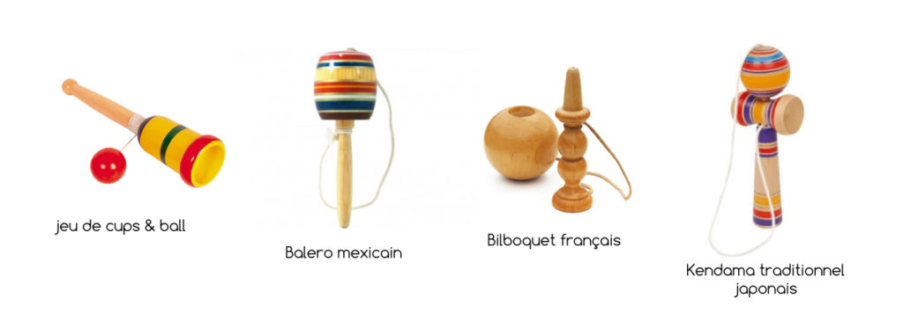

Le Kendama est un jouet en bois traditionnel venu du Japon. Aussi appelé le bilboquet japonais, c’est un jeu qui consiste à rattraper la boule avec le manche, tout en enchainant des figures techniques et amusantes. Vous l’aurez compris le Kendama est un jeu d’adresse. Apparu il y a plusieurs siècle c’est dans les années 2000 que le Kendama se popularise dans les mains de pratiquants de discipline freestyle comme le ski et le roller. Le phénomène prend de l’ampleur et différentes scènes de joueurs voient le jour, principalement aux États Unis, au Canada, mais également en Europe. A mi-chemin entre le jeu et le sport, la pratique de cet objet curieux fait de nouveaux adeptes chaque mois.
Le Kendama est un jouet en bois constitué de 2 parties distinctes qui s’appellent le Ken et le Tama. La fabrication de ce jouet est réalisé à l’aide d’un tour à bois ou d’une commande numérique. Le KEN Cette partie, apparentée au manche, est constituée de 2 pièces emboitées en force, le Sarado et le Sword. Le Ken dispose de 3 coupelles de tailles décroissantes « Big cup, Little cup, Base cup » et d’une pointe appelée « Spike ». Le TAMA Cette partie est constituée d’une boule percée en son centre par un trou, dont l’entrée conique est appelée le « Bevel ». L’ensemble des 2 pièces, KEN et TAMA, sont reliées par une ficelle en nylon.

Le Kendama est un jouet en bois constitué de 2 parties distinctes qui s’appellent le Ken et le Tama.
La fabrication de ce jouet est réalisé à l’aide d’un tour à bois ou d’une commande numérique.
Cette partie, apparentée au manche, est constituée de 2 pièces emboitées en force, le Sarado et le Sword.
Le Ken dispose de 3 coupelles de tailles décroissantes « Big cup, Little cup, Base cup » et d’une pointe
appelée « Spike ».
Cette partie est constituée d’une boule percée en son centre par un trou, dont l’entrée conique est appelée
le « Bevel ».
L’ensemble des 2 pièces, KEN et TAMA, sont reliées par une ficelle en nylon.